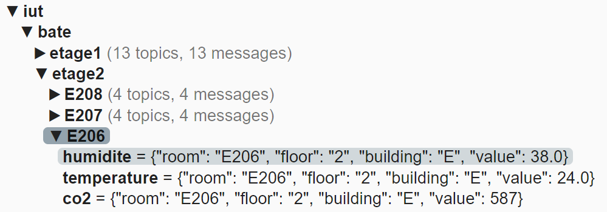
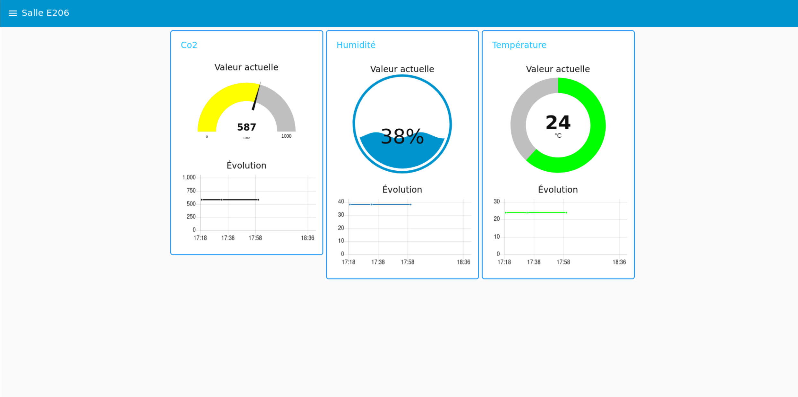
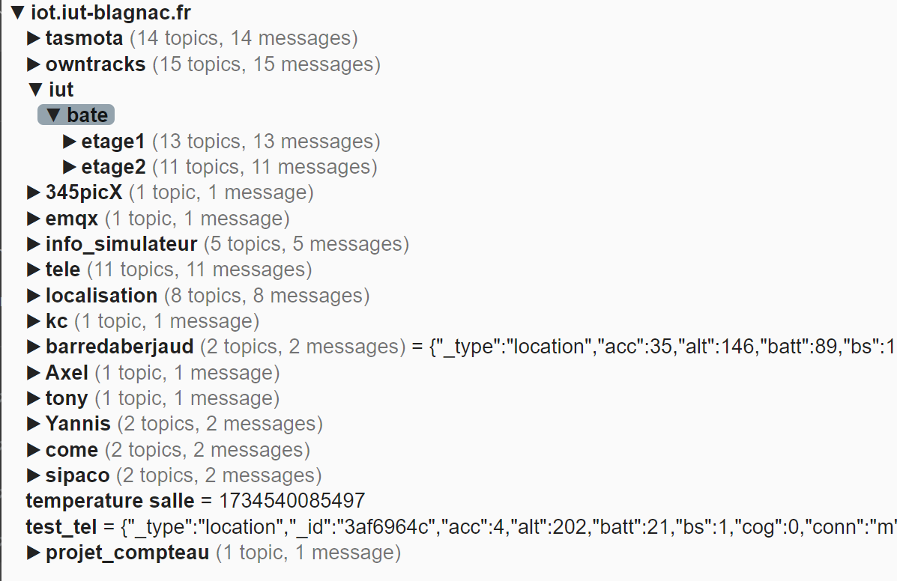

Durant le projet, nous avons été confrontés à plusieurs reprises à un dysfonctionnement du broker MQTT principal de l’IUT. Il arrivait qu’il cesse de répondre, rendant impossible la collecte des données en temps réel. Pour pallier ce problème, notre enseignant nous a fourni une adresse IP alternative, que nous avons dû intégrer dans tous les scripts concernés. Cette adaptation de dernière minute a entraîné une perte de temps et perturbé nos tests automatisés, qui s'appuyaient sur l'adresse initiale.
Lors du déploiement des capteurs dans Node-RED et leur intégration au site, nous avons constaté que la salle E206 ne possédait pas de capteur de luminosité opérationnel. De plus, les capteurs présents ne transmettaient qu’une seule mesure, ancienne et obsolète. Par conséquent, aucune donnée de luminosité ne pouvait être affichée pour cette salle, et les autres mesures restaient figées, sans mise à jour. Nous avons donc adapté l’interface pour masquer les données non fiables, notamment en supprimant le tableau de luminosité pour E206. Les valeurs visibles sont en réalité issues du dernier déploiement du flow Node-RED, indépendamment de leur date réelle de captation.
Cela a limité notre capacité à afficher des données dynamiques pour cette salle. Nous avons donc dû nous adapter : la luminosité n’est pas affichée pour E206, et les autres valeurs restent constantes car les données sont toujours les mêmes. En effet, sur l'affichage de la salle E206, il ne figure pas de tableau pour la luminosité et les données des autres capteurs sont obsolètes. Ci-dessous est affiché les données de la salle E206. Les valeures que vous pouvez voir ne sont dû qu'au déploiement du flow nodered ( les dernières données sont envoyés dans l'interface quelque soit le moment où elles ont été capturées ).
UL’utilisation de nos machines virtuelles en mode bridge a causé un autre souci : à chaque changement de salle ou de réseau, l’adresse IP de la VM changeait automatiquement. Cette variation rompait les liens avec tous les services Docker configurés avec des adresses IP fixes (Node-RED, InfluxDB, Grafana). Nous avons dû reconfigurer manuellement les connexions à chaque fois, ce qui a ralenti notre avancement et rendu le processus de déploiement plus complexe.
Le broker MQTT fourni contenait uniquement les capteurs d’un seul bâtiment, alors que le cahier des charges en prévoyait plusieurs. Afin de préserver la structure prévue de la base de données et la logique à deux gestionnaires, nous avons maintenu deux entrées côté gestion administrative, même si un seul gestionnaire était réellement actif. Nous avons également veillé à garder la base extensible, dans l’éventualité où de nouveaux bâtiments seraient ajoutés au broker ultérieurement. Ci-dessous, une capture d'écran illustre l'absence des autres bâtiments dans le flux MQTT disponible.
